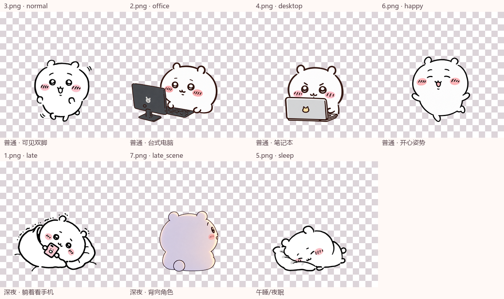

由实际接入项目的PNG图集播放。默认固定整图，单独观察身体部位；可切换为整图与身体叠加。预览循环播放，应用内互动只播放一次。

统一320×320透明画布，底部基线y=280。2/4保留电脑、键盘；7仅中间角色。原始照片不覆盖。模型抠图会重绘部分边缘，未声称逐像素复制。
2图修复桌面移除后露出的下缘；7图修复草地遮住的最下缘。保守补绘范围和源图分开保存。没有补出隐藏的脚，不将电脑/卧姿素材冒充走路。只有3图加入可见双脚交替抬动；完整步态仍受原图姿势限制。
完整交付与实际验证 · 抠图及修复提示词 · 透明度清单